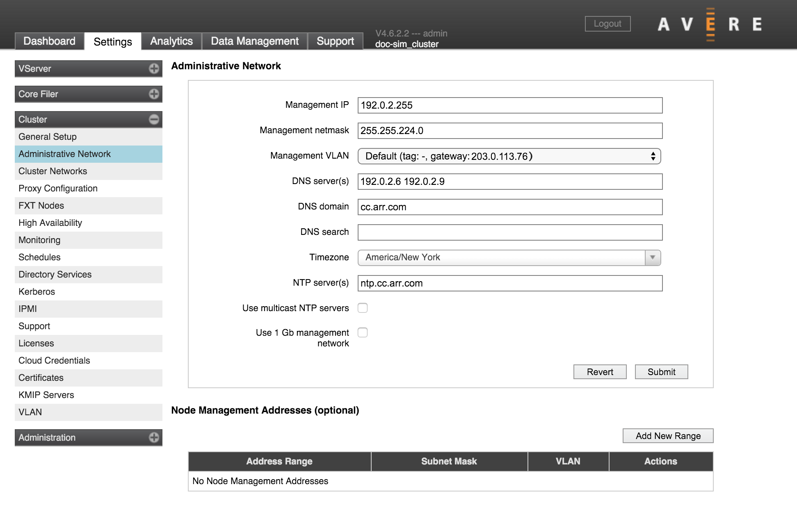
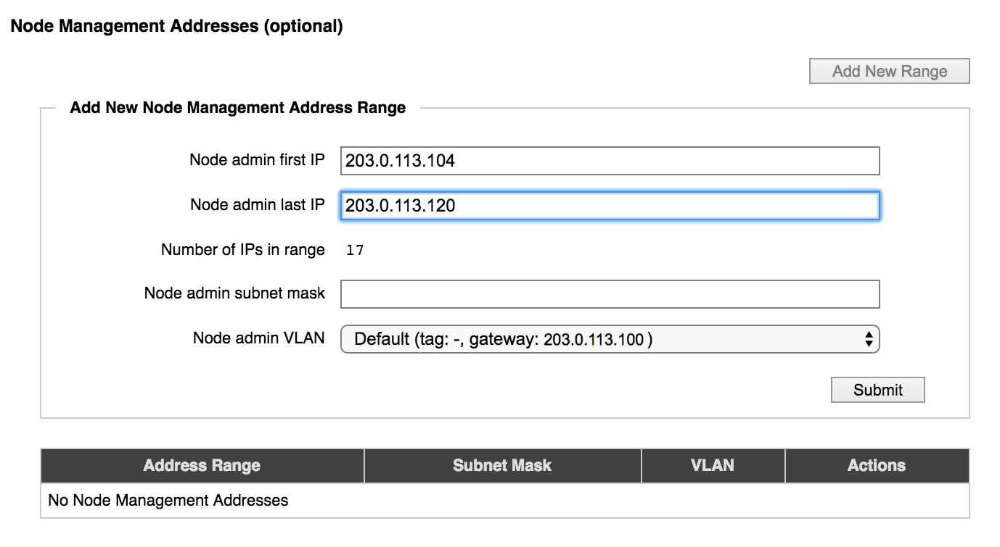

Cluster > Administrative Network
The second page in the Cluster section of the Settings tab has configuration options for the cluster’s administrative network. The administrative network provides access for configuring the cluster - either through the Avere Control Panel or with the XML-RPC API.
You must specify some of these settings when you create the cluster (read the FXT Cluster Creation Guide for details), but they can be changed on this page.
Important
Be cautious when making changes to network settings on a cluster that is being used. Consult Avere Global Services if you are unsure about the possible implications of network configuration changes.
Read Configuring Network Services for an Avere Cluster to learn more about this configuring networks for Avere OS clusters.
Administrative Network Settings
Management IP
This is the preferred IP address to use when accessing the Avere Control Panel.
(You also can access the Avere Control Panel by typing an individual node’s IP address; this can be helpful for troubleshooting.)
After changing this setting, you should use exit the Avere Control Panel and use the new IP address to log back in.
Management VLAN
Note: This setting does not appear on clusters with advanced networking disabled.
Choose one of the VLANs in the system to use for traffic between the management network and individual cluster nodes. To create additional VLANs, use the Cluster > VLAN settings page.
Only VLANs with the role Management appear in this list. Read VLAN Roles for more information.
DNS Settings
The three DNS-related fields allow you to configure the cluster’s DNS parameters. Read Configuring DNS for the Avere cluster for additional information about using DNS in an Avere OS cluster.
A DNS name can include alphanumeric characters (A-Z and 0-9) and the hyphen character (-). It can include the period character (.) as a delimiter between segments of domain names.
DNS Servers
Use the DNS Server(s) field to specify the IP addresses of up to three DNS servers for the cluster. Separate multiple IP addresses with spaces.
Time Parameters
There are several time-related settings on this page.
Time Zone
The Timezone drop-down selector sets the time zone for the cluster. You might want to change this value if the cluster begins serving clients in a different location than it did when it was created.
NTP Servers
The NTP Server(s) field lets you specify the cluster’s network time protocol servers.
Important
Specify either one NTP server, or three NTP servers in this field. If two NTP servers are used, and they give different values, cluster operation can be impaired because the conflict is not easily resolved. Inconsistent timestamps can result in out-of-order file operations and other problems.
Then NTP Server(s) field accepts hostnames or IP addresses; separate values with spaces.
Separate Management Network
Check the Use 1Gb Management Network box if you want to assign the 1GbE management ports on your FXT nodes to a separate network reserved for management traffic.
In FXT 4000 Series hardware and earlier, the management network uses the two built-in ports (e0a and e0b) and leaves the 1GbE ports on the network adapter available for other traffic. FXT 5000 Series hardware has four built-in 1GbE ports (e0a, e0b, e0c, and e0d), and all four are included in the management network if this box is checked.
If Use 1Gb Management Network is selected, management addresses and cluster management addresses are assigned only among the 1Gb management ports.
Node Management Addresses
Note: If advanced networking is disabled, only one address range can be defined.
A table of IP address ranges reserved for node management traffic appears below the Administrative Network section of the page. Configuring a reserved address range is optional; otherwise, the system uses the same network interfaces for both data and management traffic.
Reserved management addresses are distributed across the cluster nodes so that each node is guaranteed to have at least one management IP. (If using this feature, you must specify a range large enough to supply all of the nodes in the cluster. You can modify the range to add more IP addresses if your cluster grows beyond the supply.)
If your range includes more IP addresses than there are nodes in the cluster, the extra addresses are retained until they are needed. For example, if you specify a range of twelve IP addresses in a three-node cluster, the cluster allocates one management address to each node in the cluster and holds the remaining nine addresses in reserve in case more nodes are added to the cluster. If nodes are added, the cluster assigns each new node a reserved IP address until the range is exhausted.
The reserved management IP address assigned to each node is shown in the Nodes tab of the Avere Control Panel dashboard page. A column named Node Mgmt IP shows the address assigned to each cluster node. If you have not configured reserved management IP addresses, this column does not appear. The Node Details settings page also shows management IP addresses.
Use the Node Management Addresses section to add or modify management address ranges.
To delete an address range and free its IP addresses, select it in the table and click Delete.
Adding a Management IP Address Range
Click the Add New Range button to create a new range, or select an address range in the list and click Modify to update one.
{kind=link}
Specify the addresses by entering the first and last address in the range. The number of addresses is automatically calculated.
Enter the subnet mask in the field provided, and choose the VLAN that these addresses should use.
If you do not choose a designated management VLAN, it is strongly recommended that you choose a VLAN that uses the same gateway as the management VLAN for your cluster. If the gateway of the management VLAN does not match the gateway of the (optional) node administration VLAN, the management interface might behave strangely.
About “Advanced Networking”
A feature called Advanced Networking, which enables multiple VLANs and a few other network features, was optional in earlier versions of Avere OS. Clusters that were upgraded from before Avere OS 4.5 might still have this feature disabled.
If a blank checkbox labeled Enable advanced networking appears on the Cluster > General Setup page, then advanced networking has not been activated for this cluster.
After you enable advanced networking, it cannot be deactivated.
Most clusters have advanced networking features enabled by default, and the term “advanced networking” does not appear in the Avere Control Panel for such systems.
Slightly different options appear on the Administrative Network configuration page if advanced networking is disabled:
| Options with Advanced Networking | Options without Advanced Networking |
|---|---|
|
|
The settings for legacy clusters are described in Settings for Clusters that use Basic Networking.
For systems with advanced networking, MTU and router parameters are configured for individual VLANs on the Cluster > VLAN settings page, and static routes can be created from that page as well.
Settings for Clusters that use Basic Networking
If advanced networking is disabled, additional network settings appear on this page.
For typical clusters, which use advanced networking, these settings can be configured for individual VLANs from the VLAN page. Read Cluster > VLAN for details about how to customize these features when using advanced networking.
{kind=link}
Administrative Network settings without Advanced Networking
Default MTU
This setting appears only for systems without advanced networking.
Use this field to set or change the maximum transmission unit (MTU) setting for the cluster. If not customized, the default value is 1500 bytes.
The MTU setting is used on all cluster interfaces, including client-facing addresses, cluster addresses, and management addresses.
Typical values for the MTU setting are 1500 (the default) and 9000. Custom values are also permitted. If you specify a value greater than 1500, jumbo frames (with more than 1500 bytes of payload) are automatically enabled for the cluster.
Important
Before setting or changing the cluster’s MTU value, verify the proposed value with your network administrator, particularly if you are specifying a value that enables jumbo frames.
Note
If you specified the optional non-management MTU and non-management netmask while Use 1Gb Management network was active, those MTU settings continue to be used even after the checkbox is deselected.
Make sure you remove the non-management MTU and non-management netmask settings before deselecting the management network feature.
When joining a node to a cluster with a physically separate management network, connect only the cluster ports on the joining node. After the node has joined, the management network ports may be connected.
Default Router
This setting appears only for systems without advanced networking.
The default router is used by all of the cluster’s networking interfaces. To change the setting, enter a new value in the Default Router field and click Submit. The value must be in dot-decimal IPv4 notation.
Static Routes
This setting appears only for systems without advanced networking.
The Static Routes field allows you to add a manual entry to the default router’s routing table.
To set a static route, enter the following three values as a space-separated list in the Static Routes field. All three values must be specified in dot-decimal IPv4 notation.
- Destination IP address
- Netmask (can be specified either in dot-decimal IPv4 notation or in /number_of_bits format)
- Gateway
The following example specifies a static route with the destination IP address 203.0.113.0, the netmask 255.255.255.0, and the gateway 192.0.2.118:
203.0.113.0 255.255.255.0 192.0.2.118
To enter more than one static route, separate the space-separated route definitions with commas. The following example shows two entries (the first example, plus an additional static route):
203.0.113.0 255.255.255.0 192.0.2.118, 198.51.100.4 255.255.255.0 192.0.2.118